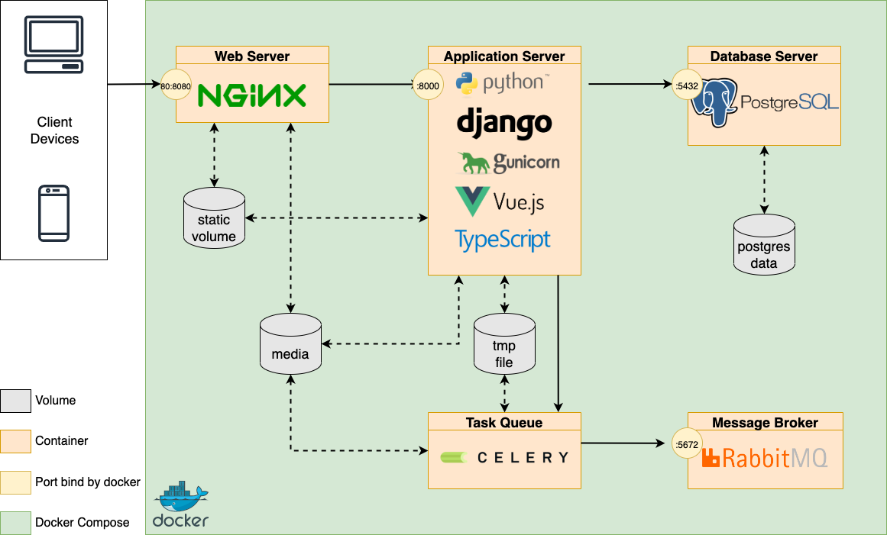
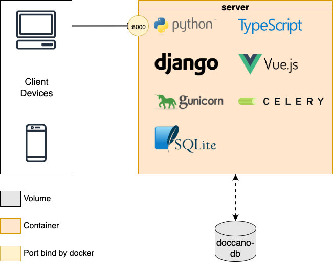
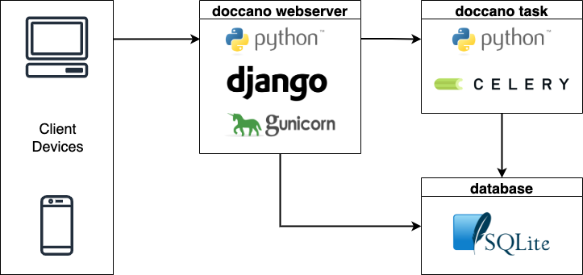

Developer Guide
The important doccano directories are:
├── backend/
├── docker/
├── frontend/
└── tools/
backend
The backend/ directory includes the backend's REST API code. These APIs are built by Python 3.8+ and Django 4.0+. All of the packages are managed by uv, Python packaging, and dependency management software. The directory structure of the backend follows mainly the Django structure. The following table shows the main files and directories:
| file or directory | description |
|---|---|
| api/ | Django application. In the older versions, this manages all the APIs. Now, there is only an API to check the status of Celery tasks. |
| auto_labeling/ | Django application. This manages the features related to auto labeling. |
| config/ | Django settings. This includes multiple setting files like production and development. |
| data_export/ | Django application. This manages the features related to data export. |
| data_import/ | Django application. This manages the features related to data import. |
| examples/ | Django application. This manages the features related to manipulate examples. |
| label_types/ | Django application. This manages the feature related to label types. |
| labels/ | Django application. This manages the feature related to labeling. |
| metrics/ | Django application. This manages the feature related to project metrics like the progress for each user, label distribution and so on. |
| projects/ | Django application. This manages the feature related to project manipulation. A project includes its members, examples, label types, and labels. |
| roles/ | Django application. This manages the feature related to roles. There are three roles: administrator, annotator, approver. These roles are assigned to the project members and defines their permission. |
| users/ | Django application. This manages the feature related to users. |
| cli.py | This defines the command line interfaces. If you install doccano by Python package, this file is used to setup database, create a superuser, run webserver and so on. |
| manage.py | Django management script. See django-admin and manage.py in detail. |
| uv.lock | Related to uv. This file prevents you from automatically getting the latest versions of your dependencies. See Basic usage in uv documentation. |
| pyproject.toml | This file contains build system requirements and information, which are used by pip to build the package. See pyproject.toml and The pyproject.toml file in uv in detail. |
If you want to set up the backend environment, see the Installation guide.
Also, you can set the following environment variables:
| Environment Variable | Description |
|---|---|
| SECRET_KEY | A secret key for a particular doccano installation. This is used to provide cryptographic signing, and should be set to a unique, unpredictable value. You should change the fixed default value. See SECRET_KEY in detail. |
| DEBUG | A boolean that turns on/off debug mode. If DEBUG is True, the detailed error message will be shown. The default value is True. See DEBUG in detail. |
| DATABASE_URL | A string to specify the database configuration. The string schema is in line with dj-database-url. See the page for the detailed information. |
| IMPORT_BATCH_SIZE | A number to specify the batch size for importing dataset. The larger the value, the faster the dataset imports. The default value is 1000. |
| MAX_UPLOAD_SIZE | A number to specify the max upload file size. The default value is 1073741824(1024^3=1GB). |
| ENABLE_FILE_TYPE_CHECK | A boolean that turns on/off file type check on importing datasets. If ENABLE_FILE_TYPE_CHECK is True, the MIME types of the files are checked. |
| CELERY_BROKER_URL | A string to point to your broker’s service URL. See Configuration and defaults in detail. |
docker
| file | description |
|---|---|
| nginx/ | The nginx directory contains a NGINX configuration files. They are used only in compose.prod.yml. |
| .env.example | The example of .env file. This is used only in compose.prod.yml. |
| compose.prod.yml | This file contains Docker Compose configuration to run a production environment. We adopted the three tier architecture. |
| Containerfile | The Containerfile. You can pull the image from doccano/doccano. |
| Containerfile.heroku | The Containerfile for Heroku. |
| Containerfile.nginx | The Containerfile to build nginx container. This is used only in compose.prod.yml. |
| Containerfile.prod | The Containerfile to build application container. This is used only in compose.prod.yml. |
The architecture of the compose.prod.yml is as follows:

On the other hand, the one of the Containerfile is as follows:

frontend
The frontend/ directory contains frontend code. The frontend directory structure follows the Nuxt.js structure. See the Nuxt.js documentation for details.
tools
The tools directory contains some shell scripts. They are mainly used in Docker containers:
| file | description |
|---|---|
| create-package.sh | This script creates doccano's Python package. Note that bun and uv must already be installed. |
| heroku.sh | This script is used to create django's superuser in Heroku. |
| prod-celery.sh | This script is used to run celery in compose.prod.yml. |
| prod-flower.sh | This script is used to run Flower in compose.prod.yml. |
| prod-django.sh | This script is used to run gunicorn in compose.prod.yml. In addition, create roles, superuser, and migrate. |
| run.sh | This script is used in Containerfile. After creating roles and superuser, run gunicorn and celery. |
Architecture of Python package
